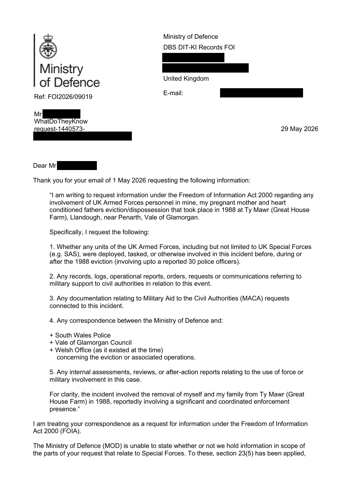

GHF-E106-R67-A1 WhatDoTheyKnow reply
Ministry of Defence FOI2026/09019: neither confirm nor deny

Transcript
Ministry of Defence DBS DIT-KI Records FOI [address redacted] United Kingdom Ref: FOI2026/09019 E-mail: [email redacted] Requester WhatDoTheyKnow request-1440573- [email redacted] 29 May 2026 Dear Requester , Thank you for your email of 1 May 2026 requesting the following information: “I am writing to request information under the Freedom of Information Act 2000 regarding any involvement of UK Armed Forces personnel in mine, my pregnant mother and heart conditioned fathers eviction/dispossession that took place in 1988 at Ty Mawr (Great House Farm), Llandough, near Penarth, Vale of Glamorgan. Specifically, I request the following: 1. Whether any units of the UK Armed Forces, including but not limited to UK Special Forces (e.g. SAS), were deployed, tasked, or otherwise involved in this incident before, during or after the 1988 eviction (involving upto a reported 30 police officers). 2. Any records, logs, operational reports, orders, requests or communications referring to military support to civil authorities in relation to this event. 3. Any documentation relating to Military Aid to the Civil Authorities (MACA) requests
Read more
connected to this incident.
4. Any correspondence between the Ministry of Defence and:
+ South Wales Police
+ Vale of Glamorgan Council
+ Welsh Office (as it existed at the time)
concerning the eviction or associated operations.
5. Any internal assessments, reviews, or after-action reports relating to the use of force or
military involvement in this case.
For clarity, the incident involved the removal of myself and my family from Ty Mawr (Great
House Farm) in 1988, reportedly involving a significant and coordinated enforcement
presence.”
I am treating your correspondence as a request for information under the Freedom of Information
Act 2000 (FOIA).
The Ministry of Defence (MOD) is unable to state whether or not we hold information in scope of
the parts of your request that relate to Special Forces. To these, section 23(5) has been applied,
which provides an exemption from the duty to confirm or deny whether information is held if doing
so would involve the disclosure of any information which was directly or indirectly supplied by, or
relates to, any of the bodies specified in subsection 23(5) of the FOIA, which lists the security
bodies. Section 23(5) is an absolute exemption, which means it is not subject to a Public Interest
Test. This should not be used as an indication that such information is or is not held.
No information in scope of the remainder of your request is held.
Under Section 16 of the Act (Advice and Assistance) you may find it helpful to note that, due to the
age of the information requested, relevant information may be held at The National Archives, such
as within Unit Historical Records, Commanders Diaries and policy files of the period:
The National Archives,
Kew,
Richmond,
Surrey,
[address redacted]
Web Address: http://www.nationalarchives.gov.uk
The National Archives is the UK government’s official archive. Its searchable catalogue
(http://discovery.nationalarchives.gov.uk/SearchUI/) is available online, although you will not be
able to view any documents online.
To view information held open at The National Archives, you can either request a copy by clicking
‘request a copy’ on the catalogue entry for the required file, which will incur a charge, or visit The
National Archives in person.
If you decide to visit The National Archives you will either need a Reader’s Ticket, or if you do not
possess one you will have to obtain one at the registration desk. For this you will require some
form of identification, a passport, driving licence etc. The National Archives does not charge for
reader’s tickets. Alternatively, you may consider employing a researcher to carry out the work for
you. If you do decide to do this, then The National Archives will supply you with a list of
independent researchers who will make a charge for their time. The National Archives do not carry
out research on individual members of the public’s behalf.
A request for the release of information held closed at The National Archives should be made to
The National Archives. You can make a FOIA request by clicking ‘submit an FOI request’ on the
Discovery catalogue page of the file in question. A request for information on other topics which
are retained by MOD, which can be identified by the ‘held by’ field of a MOD record containing
‘creating government department or its successor, not available at The National Archives’, should
be made to [email redacted].
If you have any queries regarding the content of this letter, please contact this office in the first
instance.
If you wish to complain about the handling of your request, or the content of this response, you can
request an independent internal review by contacting the Information Rights Compliance team,
[address redacted]
Please note that any request for an internal review should be made within 40 working days of the
date of this response.
If you remain dissatisfied following an internal review, you may raise your complaint directly to the
Information Commissioner under the provisions of Section 50 of the Act. Please note that the
Information Commissioner will not normally investigate your case until a MOD internal review
process has been completed. The Information Commissioner can be contacted at: Information
[address redacted]
of the role and powers of the Information Commissioner can be found on the Commissioner's
website at https://ico.org.uk/.
Yours sincerely,
Defence Business Services Records Review – FOI TeamArtifact description
Response FOI2026/09019 (letter attached): neither confirm nor deny under s.23(5) for the Special Forces parts; no information held for the rest; pointed to The National Archives.
| Catalogue ID | GHF-E106-R67-A1 |
|---|---|
| What it is | PDF document from Ministry of Defence. Attached to an email received on 29 May 2026, their reference FOI2026/09019. 3 pages. |
| From | Ministry of Defence |
| Email received | 29 May 2026 |
| Their reference | FOI2026/09019 |
| Pages | 3 |
| File | FOI2026.09019 Requester.pdf (118 KB) |
| State | Read |
Our integration
The Ministry of Defence's response to FOI2026/09019. It neither confirms nor denies holding information about the Special Forces parts of the request (s.23(5), security bodies), states no information is held for the rest, and points to The National Archives.
Concern to test: s.23(5) is used whether or not anything is held. The reply alone is neutral, but it means those parts can only be tested by the Information Commissioner.
What cuts against the case: s.23(5) is used routinely, whatever the subject, and using it implies nothing. The internal review (GHF-E106-R68-A1) upheld it.
Related: Timeline · Disclosure Dartboard